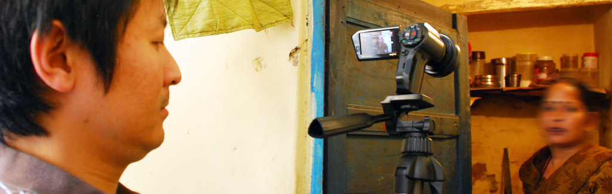
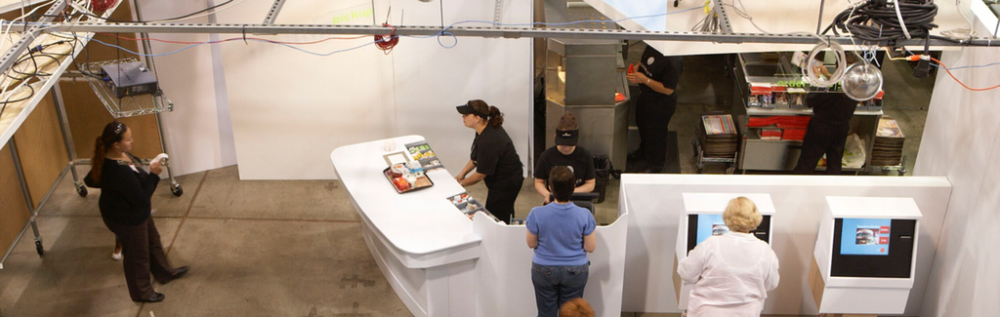
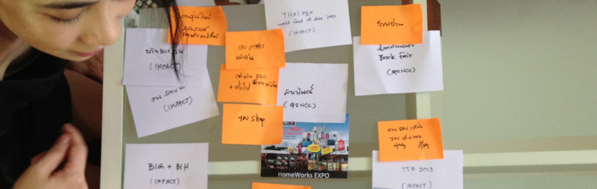

HOME
ABOUT US
OUR CLIENTS
OUR APPROACH
OUR SERVICES
OUR TEAM
SEED OF
INNOVATION
  
WHO
ARE
WE
Teak
identifies opportunities and insights
that help companies refine products and services,
grow business & explore new opportunities
in the Asian and global market.